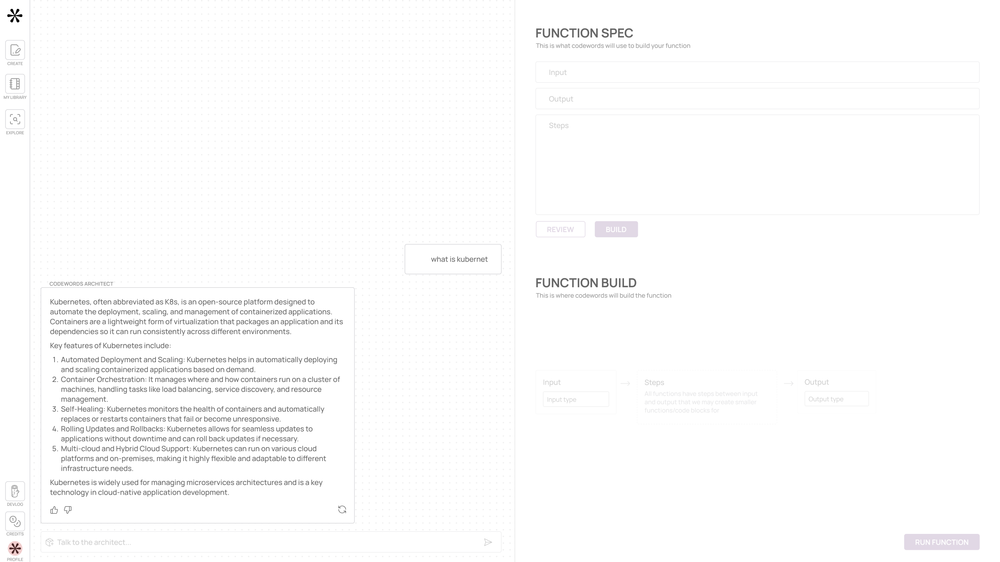

If you weren't here to walk me through it, I would have dropped off already.Amanda Pun — Staff PM, Series A fintech
A GenAI startup that lets people build software by describing what they want, in plain words. Codewords had no precedent — and no shared mental model with users. We worked with the team to design a product that could prove or disprove eight beliefs about how users would behave, in the wild. Every screen we shipped traces back to one of those bets — each one drawn, redrawn, and pressure-tested across 26 iterations.
Codewords is not a new behavior — it's a new way of completing one. People already Google for code, ask ChatGPT for snippets, hire contractors for one-off scripts. The question wasn't "will people want this?" It was "how do we get them to switch?"
The team mapped users along a spectrum — from people who'd never write a line of code (Tool Consumers) to people who'd build pipelines of pipelines (Tool Chainers). Twelve user types, sorted into four tiers by proficiency.
H4 Completeness over Simplicity. Codewords picked the right side — design for engineers and pipeline builders, even at the cost of casual users.
Eleven user-research conversations. The same theme, repeated by everyone from a founding engineer at Swiftkey to a Series A fintech PM: the product was powerful but didn't tell you what it could do, what to try, or why to trust it.
If you weren't here to walk me through it, I would have dropped off already.Amanda Pun — Staff PM, Series A fintech
I'm taking it at face value so my expectations are super high. You need to make sure you don't disappoint me if you don't set expectations from the get go.Jon Reynolds — co-founder, Swiftkey
What I find a bit problematic is that it's very open-ended. It obviously cannot do everything. But I'm not sure what I can try, what I cannot try. If I try something and I'm unlucky then I'll give up.Pier — Software engineer, Google
The prompt helper is genius.Marie Brayer — Semi-technical VC
I did not modify the new prompt because I was scared to break anything.Lucas — Technical founder
The main goal is to get things done — we'll worry about the quality later.Keshvi R. — Head of Product, Balderton
I didn't know what to do tbh, so I was just checking out the changelogs.Adnann — Designer
For the first time today, I did use CW and it saved me 30 minutes in my day.Anonymous user
"Most of the feedback is early in the user journey. The lack of onboarding, guidance, information and positioning across the overall product is a huge handicap damaging UX. The recurring themes revolve around usability ('what can I do?') and guidance ('what should I do?'). The tool seems powerful but it is lacking the integration into the user's workflow."
The synthesis named four gaps — onboarding, guidance, positioning, integration. The eight hypotheses below are the bets the team made about how to fill them. Each one is written as a falsifiable claim with a measurable test. Click any card to see how they would have known they were wrong.
The team's diagnosis of the existing product: users went straight from "Learn capabilities" to "Create" — skipping the trust-building middle. The research named the missing step space for refinement — both of the idea, before starting, and of the solution, after feedback. The redesign needed to give users somewhere to be while they figured out whether to invest. Three states. Each one with the actual quotes the team had captured from interviews.
The journey board didn't flatter anyone. Two hand-drawn arrows mark the gap: "where the team assumed users start" points at Creates Solution, the far-right state. "Where the users actually start" points at pre-discovery, three states earlier. A sticky on the Creates Solution node quantifies the humility: "A small percentage of users will make it here. <10% at steady state, probably closer to 2–5%." The redesign is for everyone still in the middle.
Low intent — "What does this do?"
How do I ...
Can I use a tool to let me ...
Can I find something similar to help me with the problem I have now
Hope for a solution — "When and how can this do something for me?"
Can I try this for something simple ...
Can I trust this to be consistent for ...
It's cool this can do ...
Could this integrate or replace my existing ...
High intent — "What of my problems can be consistently solved?"
How can this fit into my workflow for ...
How can I modernize this existing workflow with ...
How can I make this function into something I can integrate in ...
"Today journey largely skips over middle, goes from 'learn capabilities' to 'create.' Trust built with user needed this journey to happen." — annotation directly on the journey board.
Late in the process, the team built a bracket-grammar template — a way to vary the verb, the object, and the punchline independently. The slot machine below is the actual generator from "Thinking fifth." Each refresh = a real candidate the team considered.
Build
a
function
in minutes without a team of engineers.
The new way to code.
Drawn before any production code shipped. Each green node is a success path; each orange node is a fail-state that needed graceful handling. The flow watches as it draws — that's how the whole team checks "did we miss anything?" in a single glance.
Across 26 design rounds the team kept revising this screen until each of the eight hypotheses had landed somewhere on it. This is what shipped. Hover any marker to see which hypothesis that interaction implements — visible here: H5 H6 H4 H8.
26 of 26 · the version that shipped
Three signature interactions — each one is an answer to a specific user complaint from the interviews above.
Replaces "blank page paralysis" with a chat. Answers Lucas's "I was scared to break anything" by making proposed changes explicit and reversible.
The function spec is editable, not just visible. Implements H6 (Draft state matters) and answers Pier's "I'm not sure what I can try."
Builds the trust-building middle the journey was missing. Answers Adnann's "I didn't know what to do, so I was just checking out the changelogs."
two takes on the same project, in 30 seconds each